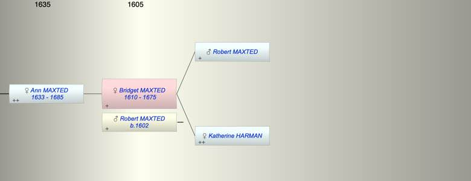

| [Index] |
| Bridget MAXTED (1610 - 1675) |
|  |
| b. 1610 at Chilham |
| +. Robert MAXTED (1602 - ) |
| d. 1675 at St Laurence aged 65 |
| Parents: |
| Robert MAXTED |
| Katherine HARMAN |
| Siblings (3): |
| Joyce MAXTED (1607 - ) |
| Robert MAXTED (1612 - ) |
| Mary AMBROSE (1606 - ) |
| Children (1): |
| Ann MAXTED (1633 - 1685) |
| Events in Bridget MAXTED (1610 - 1675)'s life | |||||
| Date | Age | Event | Place | Notes | Src |
| 1610 | Bridget MAXTED was born | Chilham | Note 1 | ||
| 1633 | 23 | Birth of daughter Ann MAXTED | St Laurence | Note 2 | |
| 1675 | 65 | Bridget MAXTED died | St Laurence | ||
| Death of husband Robert MAXTED | Note 3 | ||||
| Note 1: bap Chilham 3 Jun 1610 dau of Robert ex FMP |
| Note 2: bap St Laurence 19 May 1633 ex FMP PR |
| Note 3: will PRC11/32/170 St Laurence. Did he die Chilham 1670? |
| Personal Notes: |
| Bridget Maxsted widow was buried St L 10 May 1675 (confirmed PR) so her husband Robert died 1640 - 1675 (possibly 20 Oct 1668 St L ex FS details confirmed PR). Will? |
| Created on a Mac™ using iFamily for Mac™ on 8 Oct 2023 |